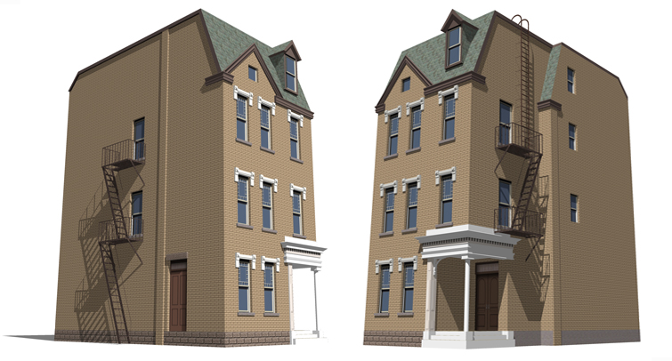

Four Rockstar series that sit outside the GTA story timeline, treated as part of the catalogue rather than a footnote: Max Payne, Manhunt, Midnight Club, and L.A. Noire. Each entry covers the games, the mood, and where to start.

Max Payne
2001
Noir third-person shooter
Remedy's noir shooter turned slow motion into a signature and a metaphor: a man moving through a nightmare at half speed. The comic-panel storytelling, winter New York, and Valkyr conspiracy gave Rockstar's catalog one of its coldest, most stylish voices.
Max Payne is also the bridge between Rockstar's publishing instincts and its appetite for auteur-driven worlds. The writing leans hard into pulp, but the loneliness under the one-liners is what keeps the series memorable.
Key games: Max Payne (2001) · Max Payne 2: The Fall of Max Payne (2003) · Max Payne 3 (2012)
Manhunt is Rockstar at its most confrontational: stealth, execution, and a camera that never lets you forget you are watching. Its critique of violence and spectatorship is uncomfortable by design, and it remains the studio's darkest experiment.
The game's influence is less about shock value than about tension: sound, sightlines, and the feeling of being recorded. It is the Rockstar catalogue's horror room, and it earns that reputation.
Midnight Club brought Rockstar's sense of place to racing: real-city inspiration, night-time streets, and a culture of custom cars and rival crews. It is the bridge between arcade racing and the studio's later city-building instincts.
The series matters because it treats a city as a track. Landmarks, shortcuts, and skyline become gameplay, long before the open-world arms race made that standard.
Key games: Midnight Club: Street Racing (2000) · Midnight Club II (2003) · Midnight Club 3: DUB Edition (2005) · Midnight Club: Los Angeles (2008)
Team Bondi and Rockstar built a 1947 Los Angeles of interrogations, traffic desks, and performance-captured faces. The city is warm and corrupt, and the truth is usually behind a lie.
Noire is the most procedural of Rockstar's worlds: evidence, testimony, and the small tells that decide whether a case closes. It is a detective game first and a crime sandbox second, which is exactly why it still stands apart.
Key games: L.A. Noire (2011) · L.A. Noire: The Complete Edition · L.A. Noire: The VR Case Files
Unofficial fan project. Not affiliated with, endorsed by, or sponsored by Rockstar Games or Take-Two Interactive. The games and their lore are not my work and are not part of any project I own or claim. All game names, characters, locations, and trademarks belong to their respective owners. Summaries are original or adapted from CC BY-SA sources; see each entry's attribution and source links.


.jpg){kind=link}
,_Miami_Beach.jpg){kind=link}